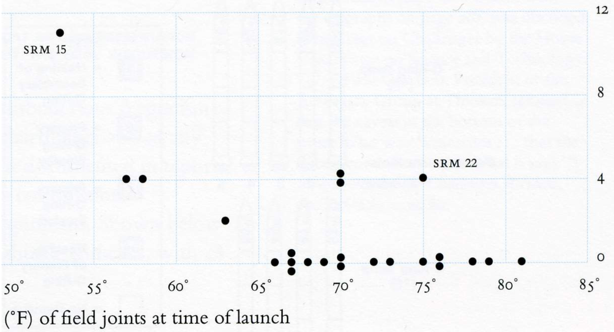
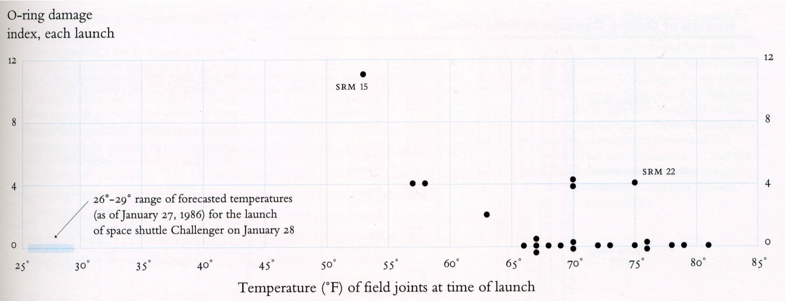
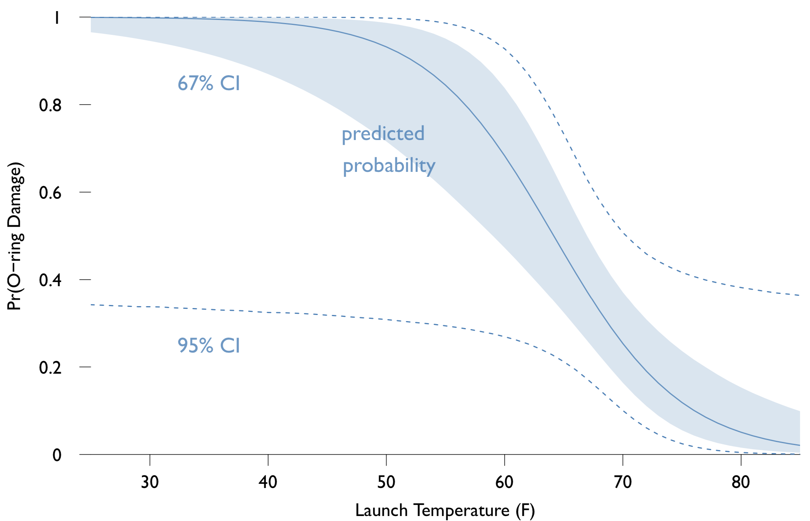
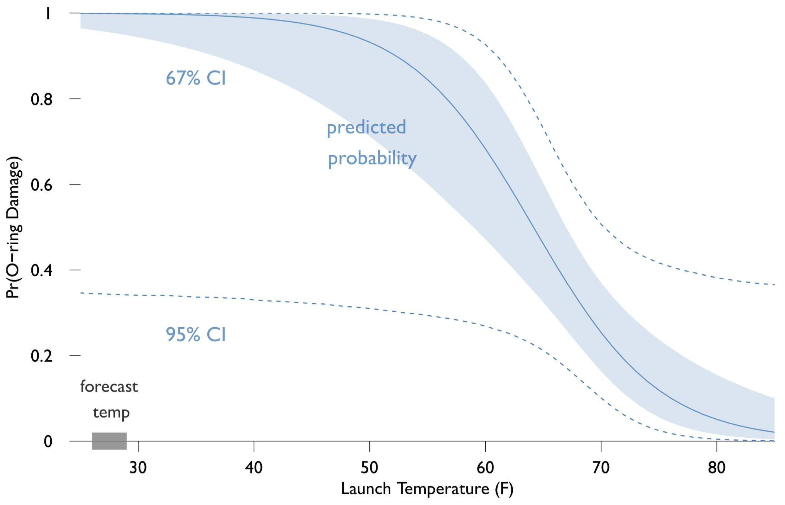
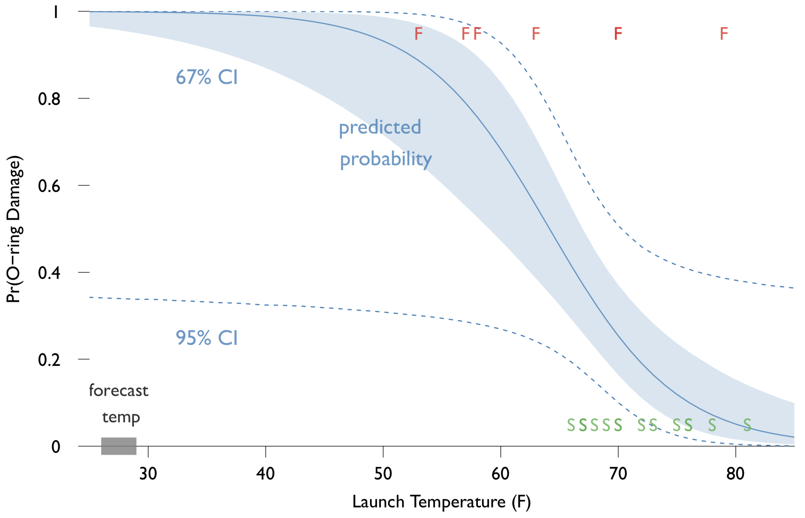
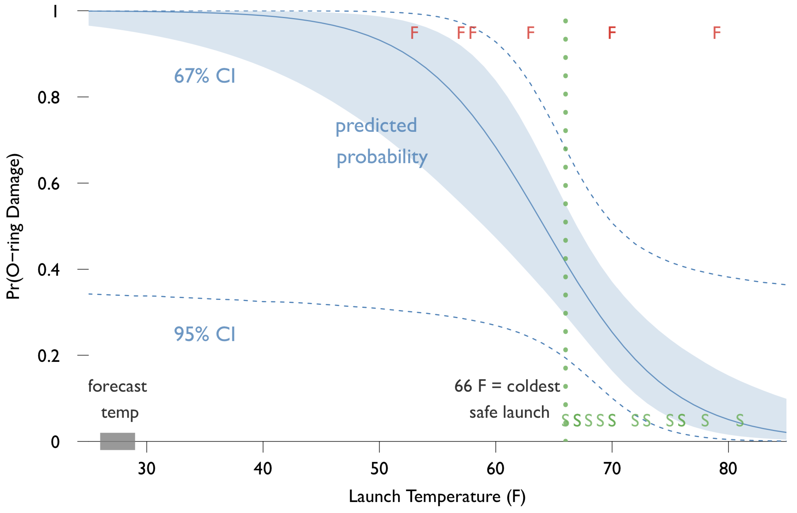

数据分析与R语言应用
1 介绍
1.1 课程介绍：
1.2 课程考核
- 考核登记方式：百分制
- 成绩组成：平时考勤占30%；期末论文汇报：20%；期末论文：50%
- 考核标准：平时考勤基础分30分，无故旷课一次扣6分，五次及以上无故旷课记0分，课前请假不扣分。期末论文汇报20分，同学间互评为主。期末论文占50分。
- 时间要求：第四次课之前，选好文章，找好1名同学作为合作者，并将文章标题和姓名发到群里（先报先得，不能重复）；第五次课之前准备好数据；最后一次课进行课程论文报告并同时提交课程论文。
- 课外学习内容：预习复习课程内容，阅读学习材料，学习相关软件的操作，完成练习，准备数据，进行数据分析，写作课程论文。
1.3 课程论文要求
- 论文应具有实质性的研究问题，有明确的观点，观点之间有关联。
- 如果认为原文章结论错误，应指明错误的原因。
- 应解释复制精确度，和原始文章的差距有多大？
- 尽量不要在正文中包括过多的中间过程，简述过程，展示结果。不要把R代码和初始结果直接贴在文章中！！！
- 复制之后，探索改进原始文章的结果呈现。在不改变原文理论假设和模型的前提下，寻找有用信息。（改善odds ratio的解释等）
- 建模前，进行充分的探索性分析，用简单、直观的方式展示有意义的探索性分析结果（图或者表）
1.4 课程论文要求
- 尝试不同的定量方法，改进原文的模型，试试看能否得到相似结果或不一样的结论。（缺失数据的处理、选择性偏误、遗漏变量偏差、模型设定、添加控制变量、改换效度更高的变量、扩展时间序列、进行样本外检验、采用更合适的统计模型等）
- 如果得到了不一样的结论，用单独一节来叙述，如果结论相似，简略介绍即可。
- 如果你的模型比原文模型更好，那么提供验证的证据，即用原文相同的样本数据或其他的样本外数据检验。（模型的概率假定更合理；95%的因变量数据落在95%的置信区间内；模型对样本外数据的预测效果更好）
1.5 论文结构
- 引言：研究目标和重要性、综述已有的研究和改进
- 概念框架：描述研究问题的解决办法，用哪些变量进行经验分析
- 模型和估计方法：展示用到的一个或多个模型，说明估计方法
- 数据：介绍数据来源、预处理方式、描述性统计
- 结果：展示已建立模型的估计结果，讨论经验结果的解释和力度
- 结论：总结讨论结果，提出进一步研究的方向
1.6 论文格式
- 中文宋体小四或英文 Times New Roman 12pt、双倍行距，无封面，左上角装订
- 包括论文题目、姓名、学号
- 参考文献建议按照《公共管理学报》要求
- 中间过程或不重要的细节可以放在附录中
- 明确写出所建立的模型
- 用公式编辑器编辑用到的数学公式，如果会用LaTex排版更好
- 数字保留两位小数或者保留到你认为足够简单清晰的位数
1.7 论文图表格式
- 图表应简明扼要，展示论点，不是展示过程，不应过度使用
- 图表应独立设定标题，图表分开标号，下方段落应有文字介绍
- 建议挑出图表中的具体某个数字或信息进行举例，帮助理解
- 表格采用三线表，不要每行每列都添加分隔线
- 表格中有百分数，应在首行标注‘%’，不要每个单元都用。
- 表格中每列数字的小数点应对齐。
- 图表大小应合适，信息量小的图尽量小。
- 可以用图或者表的地方，尽量用图。
1.8 最终提交文件
1.9 参考书目与文献
- Kabacoff. R语言实战，人民邮电出版社
- Alan Agresti. Categorical Data Analysis. Wiley Interscience
- Gelman and Hill. Data Analysis Using Regression and Multilevel/Hierarchical Models. Cambridge University Press.
- Kline. Principles and practice of structural equation modeling. The Guilford Press.
2 模型结果解释的重要性
2.1 如何解释模型结果？
对于一般的线性回归模型，我们采用回归系数及其标准误来推断自变量\(x\)和因变量\(y\)之间的关系。但是如果我们对线性回归方程进行了调整，那么如何解释回归系数\(\beta\)呢？
2.2 如何解释模型结果？
2.3 如何解释模型结果？
模型变得越复杂，如何有效解释和呈现结果就变得越重要。如果只关注回归系数的符号和显著性（数星星），可能会导致：
- 无法或难以向非技术类读者传递正确的信息；
- 错误解释模型的结果；
- 无法看到模型结果暗含的信息。
建议采用绘图的方式来传递和解释模型的结果（灵活的绘制图形是R的强项）。
2.4 挑战者号航天飞机灾难
- 挑战者号航天飞机灾难发生于美国东部时间1986年1月28日上午11时39分：在美国佛罗里达州上空刚起飞73秒的挑战者号航天飞机发生解体，机上7名机组人员丧命。解体后的残骸掉落在美国佛罗里达州中部的大西洋沿海处。
- 挑战者号航天飞机升空后，因右侧固体火箭助推器的 O型环密封圈 失效，使得原本应该是密封的固体火箭助推器内的高压高热气体泄漏。这批气体影响了毗邻的外儲箱，在高温的烧灼下结构失效，同时也让右侧固体火箭助推器尾部脱落分离。最后，高速飞行中的航天飞机在空气阻力的作用下于发射后的第73秒解体。(wikipedia)
- 那么能否避免这场灾难呢？
2.5 挑战者号航天飞机的发射决定
发生O型环密封圈损坏的飞行
| 飞行代码 | 温度（F） |
|---|---|
| 2 | 70 |
| 41b | 57 |
| 41c | 63 |
| 41d | 70 |
| 51c | 53 |
| 61a | 79 |
| 61c | 58 |
莫顿·塞奥科公司的工程师制作了上表，并且对气温53度以下的发射表示担忧， 为什么 ？ 他们了解到O型环密封圈在低温环境下可能会损坏，但是却没法说服管理当局（NASA）认识到危险。还有一种解释，即在高温或低温时会发生损坏。 他们对数据的结果呈现有哪些问题？
2.6 挑战者号航天飞机的发射决定
工程师只展现了发生密封圈损坏的飞行记录，忽略了未发生损坏的飞行记录，即有选择性的呈现因变量。
| 是否损坏 | 温度 | 是否损坏 | 温度 |
|---|---|---|---|
| 否 | 66 | 否 | 78 |
| 是 | 70 | 否 | 67 |
| 否 | 69 | 是 | 53 |
| 否 | 68 | 否 | 67 |
| 否 | 67 | 否 | 75 |
| 否 | 72 | 否 | 70 |
| 否 | 73 | 否 | 81 |
| 否 | 70 | 否 | 76 |
| 是 | 57 | 是 | 79 |
| 是 | 63 | 否 | 76 |
| 是 | 70 | 是 | 58 |
为啥要按照飞行记录号来排序？
2.7 挑战者号航天飞机的发射决定
如果按照发射时的气温来排序。有什么规律？
| 是否损坏 | 温度 | 是否损坏 | 温度 |
|---|---|---|---|
| 是 | 53 | 是 | 70 |
| 是 | 57 | 否 | 70 |
| 是 | 58 | 否 | 70 |
| 是 | 63 | 否 | 72 |
| 否 | 66 | 否 | 73 |
| 否 | 67 | 否 | 75 |
| 否 | 67 | 否 | 76 |
| 否 | 67 | 否 | 76 |
| 否 | 68 | 否 | 78 |
| 否 | 69 | 是 | 79 |
| 是 | 70 | 否 | 81 |
如果莫顿·塞奥科公司的工程师在发射前制作了上表又会怎样？
2.8 挑战者号航天飞机的发射决定
为什么NASA做了错误的决定？ 文献中的回答：官僚政治、团体迷思、有限理性等 统计学家Edward Tufte认为是数据结果呈现与建模的问题：
- 图表运用不当
- 挑选损坏情况下的数据
- 未考虑简单的统计模型
你认为应该怎么更好地展现这些数据？
2.9 挑战者号航天飞机的发射决定
散点图能够比表格更好展现变量间的关系 纵坐标是O型密封环损坏指数（由Tufte制作）

2.10 挑战者号航天飞机的发射决定
发射时的预报温度是多少？26-29华氏度！

2.11 挑战者号航天飞机的发射决定
- 如果由你在发射前进行分析和决策建议，你已经制作了上面的散点图，还需添加什么？或者你觉得你的上司会问你什么样的问题？
- ”26华氏度的气温条件下，发射失败的概率有多大？“
- 散点图只能展示概率很高，但是没有具体的数值，无法提供进一步决策的信息。
- 此外，如果发射气温是58度或67度呢？
- 因此我们需要一个模型来传递更精确的概率信息。
2.12 挑战者号航天飞机的发射决定
可以简单地用温度的函数来构建损害概率的模型。统计上一般采用logit回归模型。 \[Pr(damage)=(1-exp(-\beta_0-\beta_1 temperature))^{-1}\] 通过R可以获得如下输出
| 变量 | 系数 | 标准误 | p值 |
|---|---|---|---|
| 温度 | -0.18 | 0.09 | 0.047 |
| 截距 | 11.9 | 6.34 | 0.062 |
| 样本量 | 22 | ||
| 似然对数 | -10.9 |
大多数人会解释成温度与损坏之间具有统计上显著的负相关关系，但是这种解释还是不够清晰，是否有 更具说服力，更清晰，更有价值的 结果呈现方式？
2.13 挑战者号航天飞机的发射决定
呈现非线性模型的预测与不确定性

2.14 挑战者号航天飞机的发射决定
更清晰的呈现在29华氏度时进行发射的决策错误

2.15 挑战者号航天飞机的发射决定
比较失败与成功

2.16 挑战者号航天飞机的发射决定
从数据上看，66华氏度似乎是最低的安全发射温度，低于该温度，几乎一定会失败。

2.17 挑战者号航天飞机的发射决定
那么可接受的失败风险有多高？
